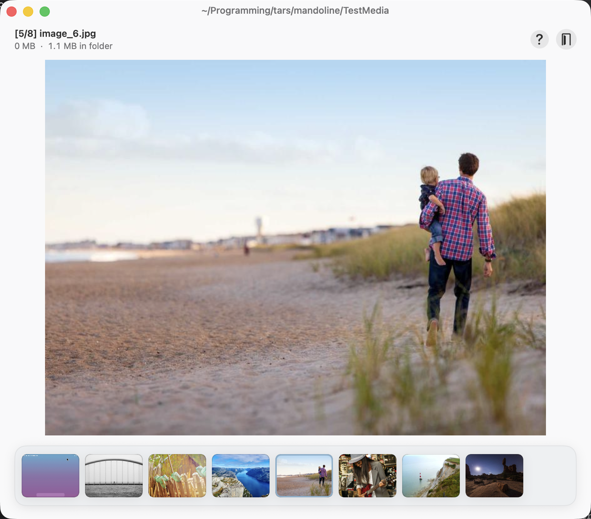

Mandoline
Slice down your bulky folders.
A lightning-fast macOS utility to triage media folders. Fly through your images and videos with keyboard shortcuts to keep, trash, or undo in a tap.
Requires macOS 15 or later.
Download for macOSIndependently distributed, so on first launch right-click the app and choose Open to get past Gatekeeper.
All caught up
Click the window, then try ← → to move, ] keep, [ trash, Z undo.

Everything you need to triage fast
Blazing-fast review
A big, distraction-free preview shows each image or video full-size, so you can decide at a glance.
Keyboard-first
Keep, trash, undo, and navigate without the mouse to clear a whole folder with a few keys.
Thumbnail carousel
A filmstrip along the bottom highlights where you are and lets you jump to any file instantly.
Always know where you are
The current folder sits in the title bar, with a live position counter plus per-file and whole-folder size estimates.
Safe & reversible
Deletions are staged and undoable for the whole session, then committed to the Trash, never a hard delete.
Private & sandboxed
Runs fully offline using native macOS APIs, touching only the folders you choose.
Under 2 MB
No bloat, no Electron. Small, lightweight, and it just does the job.
Keyboard shortcuts
- ←→ Previous / next media
- ] Keep
- [ Move to Trash
- Z Undo last action
- ⏎ Reveal in Finder
- esc Back to menu
Open source under the MIT licence.